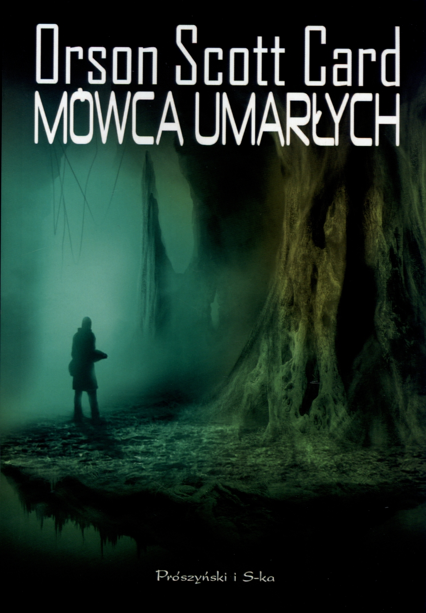

2001:Odyseja Kosmiczna
Przełom XX i XXI. Prowadzone na Księżycu wykopaliska ujawniają istnienie tajemniczego monolitu emitującego sygnał w kierunku Jowisza. Ekspedycja wysłana do zbadania tej największej planety Układu Słonecznego kończy się tragicznie - wszyscy, za wyjątkiem jednego, członkowie załogi giną. David Bowman, ocalały astronauta, wyrusza na spotkanie krążącego po orbicie Jowisza ogromnego monolitu, przypominającego obiekt znaleziony na Księżycu...Autor: Arthur C. Clarke
Fontanny Raju
Rok 2142. Dr Vannevar Morgan, twórca Mostu Gibraltarskiego, uruchamia plany budowy wyciągu kosmicznego - gigantycznej windy do transportu ludzi i ładunków z powierzchni Ziemi na orbitę. Przedsięwzięcie ma być zrealizowane na położonej na Oceanie Indyjskim wyspie Taprobane. Jednak wybrana przez budowniczych góra okazuje się świętym miejscem, zazdrośnie strzeżonym przez tamtejszych kapłanów...Autor: Arthur C. Clarke
Gra Endera
Wobec śmiertelnego zagrożenia z kosmosu Ziemia przygotowuje swoją broń ostatniej nadziei. Jest nią chłopiec, w którym odkryto zalążki niezwykłego geniuszu wojskowego. Czas nagli, a przyszłość dwóch cywilizacji spoczywa w rękach dziecka... Autor: Card Orson Scott
Mówca Umarłych
W 1830 roku, po utworzeniu Gwiezdnego Kongresu, automatyczny statek zwiadowczy przesłał ansiblem raport: parametry planety, którą badał, mieściły się w przedziale odpowiednim dla życia ludzi. Pierwsi ludzie, którzy zobaczyli nowy świat, byli Portugalczykami z mowy, Brazylijczykami z kultury i katolikami z wyznania. W roku 1886 zeszli z pokładu promu, przeżegnali się i nadali planecie imię Lusitania, co było starożytną nazwą Portugalii. W pięć dni później zorientowali się, że niewielkie, leśne zwierzęta, które nazwali pequeninos - prosiaczki, wcale nie były zwierzętami. Po raz pierwszy od czasu Ksenocydu Robali, popełnionego przez tego potwora Endera, ludzkość napotkała obce, inteligentne istoty...Autor: Card Orson Scott
Marsjanin
Mark Watney kilka dni temu był jednym z pierwszych ludzi, którzy stanęli na Marsie. Teraz jest pewien, że będzie pierwszym, który tam umrze!
Straszliwa burza piaskowa sprawia, że marsjańska ekspedycja, w której skład wchodzi Mark Watney, musi ratować się ucieczką z Czerwonej Planety. Kiedy ciężko ranny Mark odzyskuje przytomność, stwierdza, że został na Marsie sam w zdewastowanym przez wichurę obozie, z minimalnymi zapasami powietrza i żywności, a na dodatek bez łączności z Ziemią. Co gorsza, zarówno pozostali członkowie ekspedycji, jak i sztab w Houston uważają go za martwego, nikt więc nie zorganizuje wyprawy ratunkowej; zresztą, nawet gdyby wyruszyli po niego niemal natychmiast, dotarliby na Marsa długo po tym, jak zabraknie mu powietrza, wody i żywności. Czyżby to był koniec?
Autor: Weir Andy
Metro 2034
Żyję w świecie, w którym nie ma jutra. Nie ma w nim miejsca na marzenia, plany, nadzieje… Uczucia ustępują tu miejsca instynktom, a najważniejszy z nich każe przeżyć. Za wszelką cenę przeżyć. Rok 2034. Od pamiętnych wydarzeń, które początek i finał miały na stacji WOGN, minął niespełna rok. Czarni, ponoć śmiertelne zagrożenie dla tych nielicznych, którzy w czeluściach moskiewskiego metra przetrwali atomową apokalipsę, zniknęli na dobre, zgładzeni przez Artema i jego towarzyszy. Na drugim krańcu metra mieszkańcy Sewastopolskiej toczą walkę o przetrwanie z nowymi formami życia, wdzierającymi się do tego ostatniego schronienia ludzkości. Los stacji i jej mieszkańców zależy od dostaw amunicji, a te nagle ustają. Karawany giną bez wieści, urywa się łączność...
Autor: Dmitry Glukhovsky